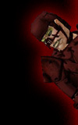

|



|

Annuls of the Clan's History
The Night of Shadows
During the Lost Age, Humans mysteriously appeared in Norrath. The
rise of the Combine Empire angered many of the Gods of the elder
races. And none were angered more than Innoruuk, the Prince of Hate.
Innoruuk was proud of His children. He had fashioned them by first
destroying, and then recreating the first Elven king and queen in
his own image. The Tier'dal served Innoruuk well. But would even
they bring the whole of Norrath under Innoruuk's power...?
Innoruuk watched these humans and decided that some of the hated
Light Gods must have conspired together and created these "rivvel"
(as He named them) for the specific purpose of controlling the whole
of Norrath. Innoruuk began to seethe with anger, and His anger grew
until He could no longer contain it. He released a howl of rage.
His children in Neriak cringed at the sound, some going mad, others
being robbed of their minds altogether. But as Innoruuk brought
Himself back under control He realized... did not some of the Ogres,
Iksar, and Trolls also cringe when they felt His outrage? In fact,
some of these races had elected to forsake their own God and worship
Him instead (and in turn some of Innoruuk's own children had chosen
to worship these other Gods, but Innoruuk rarely thought on that...).
And then He knew how to ensure His domination over this world.
If His enemies under the Light could work together to create these
rivvel (He already accepted his theory as fact), then He would turn
Their idea against Them. But instead of spending centuries in the
wasteful creation of a new race, He would let his Tier'dal work
together with the other evil races to dominate the world. Innoruuk
knew His children were the most intelligent of these races and would
easily manipulate the others, especially those who already worshipped
Him. Innoruuk sent out a mental Call to the other Gods who He knew
would best suit his plan... Rallos Zek who controls the mighty Ogres...
Cazic Thule who controls the devious Trolls and the ancient Iksar.
In this Call was contained all that he wished them each to know
about his plan, the reasons behind it, the anger that drove Him
to it, how He despised the Light Gods who had created the rivvel
most of all... all this was contained in the Call, and more... for
he added as well those deceits, those manipulative promises which
He knew would turn Them to this dark alliance.
Rallos Zek and Cazic Thule both agreed to make their children agreeable
to this idea of alliance. Innoruuk knew each of Them probably had
secret, selfish reasons for agreeing, but he did not care. Such
was His arrogance that he felt capable of manipulating them to his
ends no matter what happened... and the other Dark Gods were similarly
arrogant, for they believed the same thing...
And so the Shadow Gods, as they would be called by those mortals
who would follow the path of the Shadowclan, wove Their alliance
with promises none of Them intended to keep. To Their followers
all the Shadow Gods sent a wave of immense, nearly mind-shattering
terror. The message of this dark alliance was received on a night
the scholars would later name, The Darkest Night, The Night of Terror,
The Night The Shadows Awoke. When the evil races recovered, the
strongest and most cunning of each began forming the Shadowclan,
devoted to bringing death, destruction, and eventual domination
over the light races. Each clan's leaders then prepared to contact
the other races so that they might all start down their path to
destiny...
The Dark Prophet
One of the best protected, yet non-magical items in the possession
of the Shadowclan is the original written account of the first description
of the Dark Prophet. This account was written by the first Oracle
of the Shadowclan, the great Troll Chugg, shaman of Cazic-Thule.
The Dark Prophet is the most honored mortal known to the clan. This
is the account written by Chugg, translated from Trollish to Common
speech...
"Tis the day after the Blessed Night when our destiny was
shown to us. Great was the pain we were given, and yet we long to
feel such pain again. Fear and Hatred spread over the whole of Norrath
is now the goal of the Shadowclan. This was the Message we received
from the Shadow Gods. But there was more to the message... meanings
still vague to me, and yet I must recall everything I can for I
seem to remember more than any of my brethren. Perhaps it is fitting
that the Oracle should translate this part of the Message, since
it would seem that the Oracle will forever be the interpreter of
the Dark Prophet's words. That was part of the Message, but there
was more...
Guide us, he will, this Dark Prophet. But he shall not rule. He
will bless the Shadowclan with some sort of link to the thoughts
of our Gods, and yet we will not understand. How can this be? I
must think on it until it becomes clearer. I must recall the vision
exactly...
A large Ogre who is not an Ogre stands upon a large stone, taller
even than himself. And all about this rock are seated Troll, Ogre,
and Tier'dal. The Dark Prophet speaks... no, babbles mostly. It
seems his words almost hold meaning, but that meaning dances just
out of reach. And then he is an Ogre no more, and one of the Tier'dal
stands upon the stone, but he is not Tier'dal. Still he rants and
screams at the gathering. Looks of confusion surround him. We do
not understand. Finally he subsides into incomprehensible mutterings
and he is carefully led away by shaman caretakers and warrior guards.
As he descends from the stone his shape changes again into that
of a Troll, but he is not a Troll, and then he is led away. Then
a smallish Troll wearing a mask climbs the stone. Is it me? I cannot
be sure. He shouts at the same gathering, trying to make sense of
what they have heard. And as he finishes a great cheer rises from
the gathering. Surely this is an important event, and one that does
not often occur...
So this Dark Prophet who is not Ogre, nor Troll, nor Tier'dal,
but takes the form of all these races will give us his prophecies,
and they shall guide us. But there must be one among us who can
make sense of the Dark Prophet's meaning. And where can this Dark
Prophet be found? He seems mad. He obviously needs our care if he
will survive. And survive he must. We must find this Dark Prophet
quickly, for we cannot even consider what would happen to us if
he were first found by rivvil..."
The Coming of Chaos, The Light's revenge
For years the Gathering of Evil grew slowly in strength as their
dark union became know by more and more of the chosen evil ones
throughout the lands. The Clan of Shadows began to spread it's destructive
might across Norrath. They began to tread upon the lands of the
hated Rivvil and the light elves. Skirmishes were a common place
as the Clan spread. The Clan of Shadows would even begin to encroach
upon the planes of the gods! Once the rivvel became aware of the
true threat which the Clan was becoming there was cause for alarm
amongst the races of light. The brutish savages that composed Shadowclan
were on the verge of obtaining the many artifacts of power from
the realms of the dark gods themselves.
This was something the light races could not allow. They mustered
their leaders and sages and devised an impressive plan... they would
use the dark ones evil tendencies against themselves. A few well
placed enchantments ad charms would plant the seeds of greed and
dissension. The light races cheered at their own brilliance and
went about preparing this scheme. As the light races had hoped,
the dark ones were not expecting such an attack. They would be rewarded
beyond their wildest expectations time will show.
The Clan of Shadows took little time in breaking into squabbles
over treasure, power, rightful places in the land, rights, and other
such matters... all things imaginable that would cause strife within
the great army and lead them to battle themselves.. shattering the
alliance that had been formed. Many would be slain, lost, or worse
they would be turned into the traitorous pawns of the light races...
the ultimate irony one might say. The troubles would continue in
this time of Chaos for may months as the clan battled amongst itself
and the few who began to understand what had transpired struggled
to stop the carnage. Eventually a calm came to the Chaos... a few
strong leaders managed to restore order from the chaos. The leaders
were not of any particular quota of the evil races this time, the
old order shattered by the chaos. Now the leaders would be of any
of the dark races, their ability would be their strength. The old
legends of the Dark Prophet were lost in the time of Chaos... and
the few who do remember, believe the Prophet Dead. There is a new
sense of purpose overcoming the Clan of Shadows as they recover
from the bloodlust which had overcome them all... REVENGE.
The Shadowclan's new leaders began to discuss the events which
led to them being where they are now.... their numbers crippled
by the events of the Time of Chaos. They began to draw up a long
list of their enemies, gather charts and maps and begin to prepare
a course of action. A purpose was determined and the tools needed
to accomplish this purpose were considered. The creation of a powerful
army would be necessary in order to extract vengeance on the light
races as well as to be prepared for any other attacks from unexpected
places. With the spiritual guidance of the Oracle, whose Seer like
powers would show the clan the path that the gods would have the
Clan of Shadows travel. A leader of the Horde would need to be appointed..
one whose existence was to wage war.. the Shadowlord would be found
and then the journey down the road to vengeance would begin.....
|
|


|